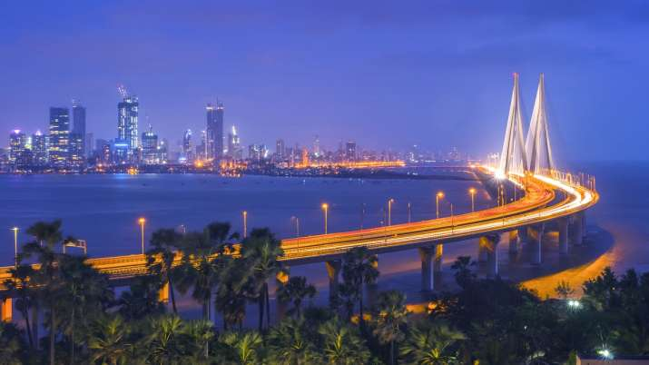
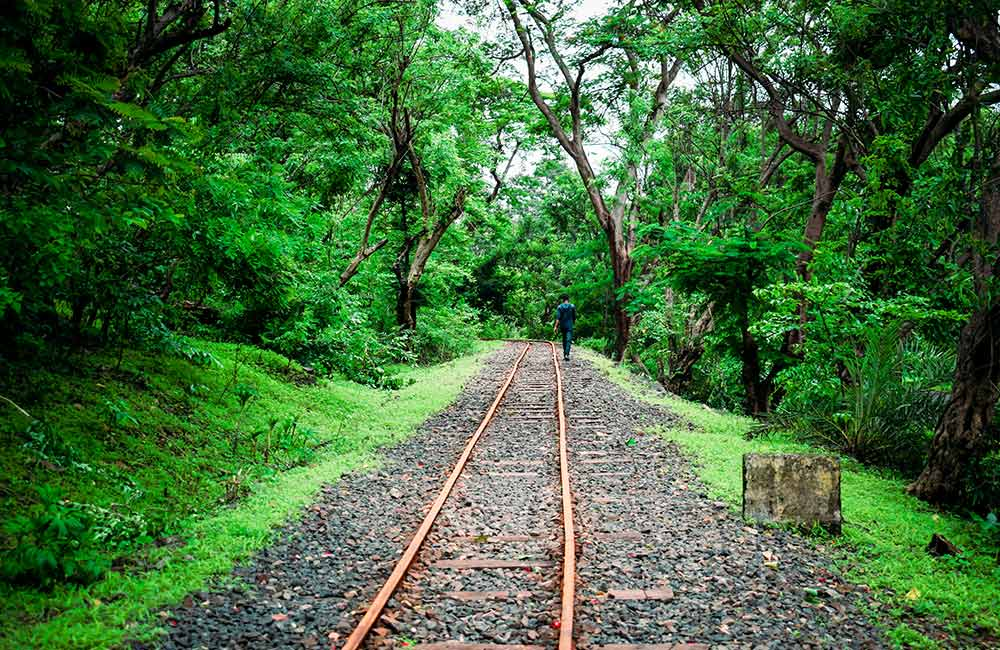
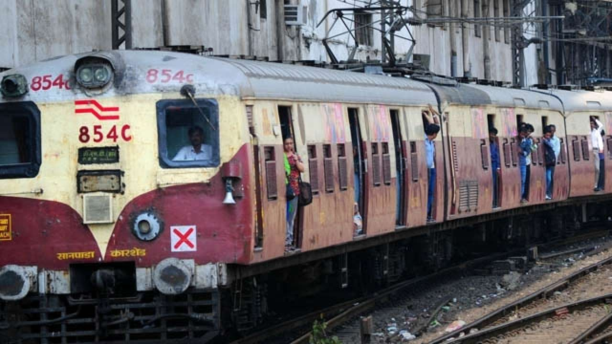
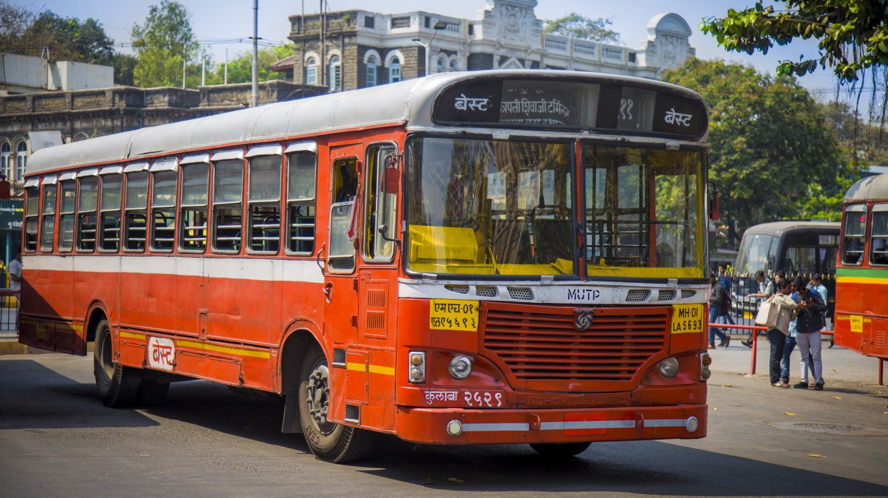
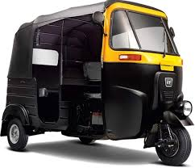
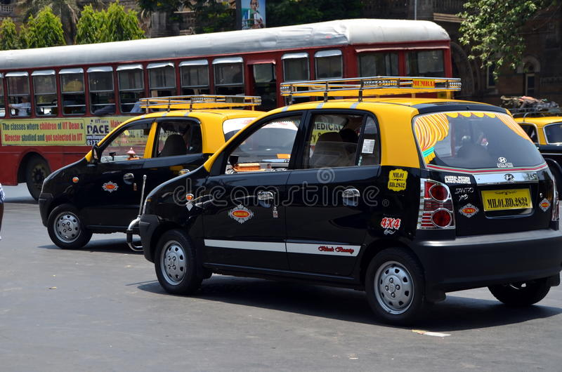

M U M B A I
City Of Dreams

Mumbai (formerly called Bombay) is a densely populated city on India’s west coast. A financial center, it's India's largest city. On the Mumbai Harbour waterfront stands the iconic Gateway of India stone arch, built by the British Raj in 1924. Offshore, nearby Elephanta Island holds ancient cave temples dedicated to the Hindu god Shiva. The city's also famous as the heart of the Bollywood film industry.
I have been staying in Mumbai ever since I was born. I love this city. You get to meet people from different walks of life. The city never sleeps. You wont even realize the difference between 7pm and 12 am. Streets are always crowded with people no matter what the time is.
More about Mumbai
| Area: |
603.4 km² |
| Elevation: |
14 m |
| Weather: |
27 °C, Wind SW at 19 km/h, 89% Humidity |
| Population: |
1.84 crores (2011) |
| District: |
Mumbai City; Mumbai Suburban |
Locate on Google Maps
Places To Visit
- Gateway of India

- -Gateway of India, the best place to visit in Mumbai, was built in 1924 by George Willet to honor the visit of King George V and Queen Mary to Mumbai. Visit this place in the early morning or late evening hours to enjoy the cool breeze of the sea with your family sans the crowd. Located next to the iconic Taj Mahal Palace and facing the vast Arabian Sea, the Gateway of India leaves you spellbound in every way possible. Take a ferry ride offered here to experience a stupendous view of this monument right from the sea and you can also visit other main attractions nearby.
- Sanjay Gandhi National Park

- -Sprawling over an area of 104 sq. km. of land, this is one of the most-visited national parks in Asia and because of this, I give it the 2nd spot among all the best places to visit in Mumbai. With all sorts of fun activities, this park can surely be a family entertainer. You can watch the big cats of the park close enough in a safari cage and have a fun day boating in the artificial lake in the park. Take the forest road or stairs and hike towards the Gandhi Tekdi, a memorial built in the memory of Mahatma Gandhi. The toy train, Van Rani, is another popular attraction here, especially among kids. You can also visit the 2000-years-old Kanheri Caves to capture the Buddha relics. The undisturbed natural trails and the Jain Temple in the forest are also sure to make your visit a memorable one.
- Haji Ali Dargah

- -How about taking a trip with your family to one of the most popular religious shrines in Mumbai, built right in the middle of the Arabian Sea? Yes, we are talking about Haji Ali Dargah that houses the tomb of Sayed Peer Haji Ali Shah Bukhari. This grand edifice is made of white marbles and exemplifies the Indo-Islamic style of architecture. A walk through the causeway that connects the Dargah to the Lala Rajput Rai Marg is the main attraction of this place. Feel the spirituality of this place with your dear ones while enjoying a panoramic view of the deep blue waters! I give the places Fab rank no.4 among all the best places to visit in Mumbai.
For More Places, Click Here!
Famous Food
- Vadapav
- Misal Pav
- Pav Bhaji
- Sev Puri and Bhel Puri
- Pani Puri
Modes of Transportation




More About Mumbai
Home
News
Tourist Attraction
History
Feedback